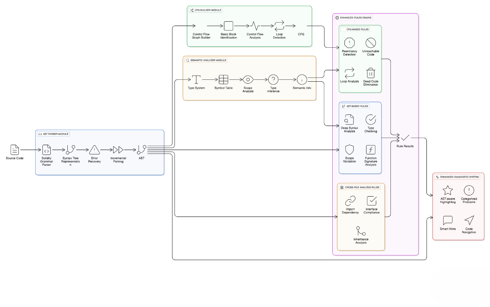

Tóm Tắt
Solidity Static Analyzer - Extension phân tích mã
tĩnh thời gian thực cho Visual Studio Code, phát hiện lỗi bảo mật
và cú pháp trong smart contracts Solidity ngay khi lập trình viên
gõ code.
Giới Thiệu
Smart contracts xử lý tài sản giá trị cao trên blockchain với tính
bất biến, khiến lỗ hổng bảo mật có thể gây thiệt hại nghiêm trọng.
Các công cụ phân tích tĩnh hiện tại thường phức tạp, không tích
hợp tốt vào quy trình phát triển, dẫn đến nhiều lỗ hổng bị bỏ sót.
Solidity Static Analyzer là extension VS Code cung cấp phân tích tĩnh thời gian thực cho smart contracts Solidity. Tool phát hiện các lỗ hổng bảo mật phổ biến (tx.origin, selfdestruct, delegatecall, reentrancy) và lỗi cú pháp cơ bản ngay khi lập trình viên gõ code.
Extension tích hợp các rule kiểm tra bảo mật quan trọng và cú pháp cơ bản, cung cấp phản hồi tức thì khi thao tác trên file .sol để ngăn chặn lỗi trước khi deploy lên blockchain.
Solidity Static Analyzer là extension VS Code cung cấp phân tích tĩnh thời gian thực cho smart contracts Solidity. Tool phát hiện các lỗ hổng bảo mật phổ biến (tx.origin, selfdestruct, delegatecall, reentrancy) và lỗi cú pháp cơ bản ngay khi lập trình viên gõ code.
Extension tích hợp các rule kiểm tra bảo mật quan trọng và cú pháp cơ bản, cung cấp phản hồi tức thì khi thao tác trên file .sol để ngăn chặn lỗi trước khi deploy lên blockchain.
Phương Pháp Nghiên Cứu
Phương pháp tiếp cận:
Hệ thống được thiết kế theo kiến trúc layered architecture với 5
layer chính: VS Code Integration, Core Analysis Engine, AST/CFG
Processing, Enhanced Rules Engine, và Advanced Diagnostic Display.
Phương pháp phân tích chuyển từ text-based sang structure-aware
analysis thông qua AST parser và Control Flow Graph builder, cho
phép phát hiện lỗ hổng phức tạp hơn như reentrancy attacks,
unreachable code, và cross-file dependencies.
Quy trình thực hiện:
Quy trình phân tích được chia thành 3 phase chính: (1)
Parsing & Structure Building - tokenize source
code, build AST theo Solidity grammar, tạo symbol table và CFG;
(2) Multi-dimensional Analysis - áp dụng
AST-based rules (syntax, type checking), CFG-based rules (flow
analysis, reentrancy detection), và cross-file analysis; (3)
Result Processing & Display - tổng hợp findings,
phân loại severity, và hiển thị với AST-aware highlighting. Hệ
thống sử dụng incremental parsing và parallel processing để đảm
bảo real-time performance, kết hợp với caching mechanism để tối ưu
memory usage.

Kết Quả Thực Nghiệm
Công cụ được kiểm thử trên nhiều mẫu smart contract chứa lỗi cú pháp
và bảo mật phổ biến. Kết quả cho thấy khả năng phát hiện chính xác
và phản hồi tức thì, hoạt động ổn định trong VS Code mà không gây
trễ đáng kể. Dù chưa có so sánh định lượng, kết quả bước đầu chứng
minh tính khả thi và hiệu quả của giải pháp.
Kết Luận & Hướng Phát Triển
Solidity Static Analyzer đã chứng minh tính khả thi
của phân tích mã tĩnh thời gian thực trong môi trường phát triển VS
Code, giúp phát hiện sớm các lỗi cú pháp và bảo mật phổ biến trong
smart contracts. Công cụ hoạt động ổn định, phản hồi nhanh và hỗ trợ
lập trình viên giảm thiểu rủi ro bảo mật ngay trong quá trình viết
mã.
Trong tương lai, nhóm phát triển hướng đến việc mở rộng bộ quy tắc để bao phủ nhiều mẫu tấn công phức tạp hơn, bổ sung đánh giá định lượng và so sánh với các công cụ khác, cũng như tích hợp machine learning nhằm tự động phát hiện các mẫu lỗi mới trong smart contracts.
Trong tương lai, nhóm phát triển hướng đến việc mở rộng bộ quy tắc để bao phủ nhiều mẫu tấn công phức tạp hơn, bổ sung đánh giá định lượng và so sánh với các công cụ khác, cũng như tích hợp machine learning nhằm tự động phát hiện các mẫu lỗi mới trong smart contracts.